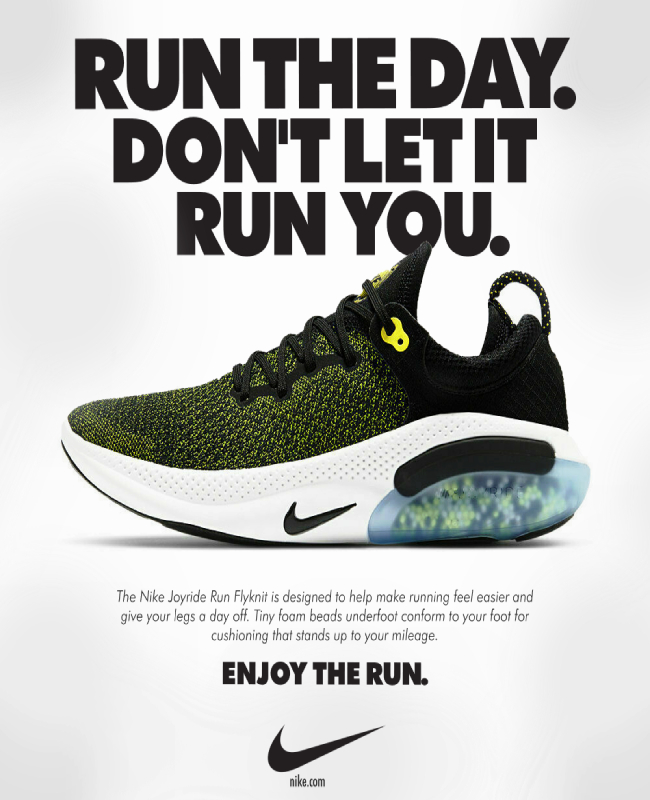
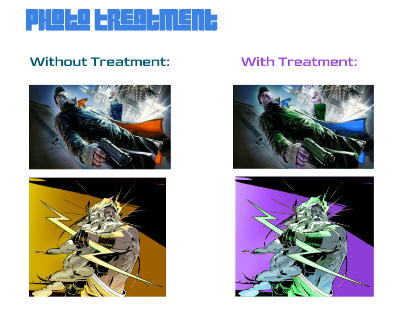

GIFs made by me
Within this nike ad, I attempted to recreate a nike ad. My goal while creating this ad was to make it as close as that of a real ad made by nike. After some close inspection with the fonts they use, the spacing between the letters, the placement of a random product of theirs followed by a inspirational quote, I believe I did a good job recreating a nike ad.

This is an example of me trying to make my own Business card. This is but a draft of just brainstorming ideas for my business card.

Lastly, I managed to take 2 images that are known from certain games and added alternative colors with only specific colors picked by me.